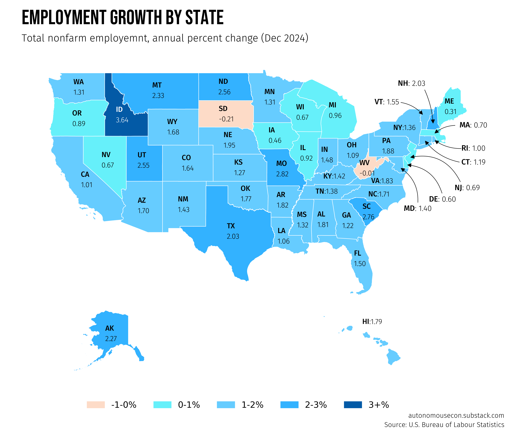

Code
import pandas as pd
import geopandas as gpd
import matplotlib.pyplot as plt
from pypalettes import load_cmap
import matplotlib.patches as mpatches
from drawarrow import fig_arrow, ax_arrow
from highlight_text import fig_text, ax_text
from pyfonts import load_font
from datetime import datetime
# Function to annotate states
def annotate_states(geo_df, ax, value_col):
"""
Annotates states on a geographic plot with their respective values.
Parameters:
- geo_df: GeoDataFrame containing geographic data, including centroids and state codes.
- ax: Matplotlib axis on which the annotations will be plotted.
- value_col: Column name containing the values to be displayed for each state.
The function adds state annotations with custom positioning and color based on the value.
"""
states_to_annotate = list(geo_df["STUSPS"].unique())
for state in states_to_annotate:
# Get the centroid coordinates and rate for each state
centroid = geo_df.loc[geo_df["STUSPS"] == state, "centroid"].values[0]
x, y = centroid.coords[0]
rate = geo_df.loc[geo_df["STUSPS"] == state, value_col].values[0]
# Make small adjustments to annotation locations
try:
x += adjustments[state][0]
y += adjustments[state][1]
except KeyError:
pass
# Determine text color based on rate value
color_text = "white" if rate >= 3 else text_color # e.g., 'black'
# Set annotation text format based on state condition
if state in ["NC", "VA", "TN", "KY", "NY", "HI"]:
text = f"<{state.upper()}>:{rate:.2f}"
else:
text = f"<{state.upper()}>\n{rate:.2f}"
# Add the annotation
ax_text(
x=x,
y=y,
s=text,
fontsize=8.5,
ha="center",
va="center",
font=other_font,
color=color_text,
ax=ax,
highlight_textprops=[{"font": other_bold_font}],
)
def annotate_state_with_arrows(
data,
fig,
state_code,
column_name,
tail_position,
head_position,
text_x,
text_y,
radius,
):
"""
Annotates a state on a plot with an arrow and text label.
Parameters:
- data: DataFrame containing the data for states.
- fig: Plotly or matplotlib figure object.
- state_code: str, the two-letter code for the state to annotate (e.g., 'NJ').
- column_name: str, the column in the data containing the value to plot.
- tail_position: tuple, (x, y) starting position of the arrow.
- head_position: tuple, (x, y) end position of the arrow head.
- text_x: float, x-coordinate for text placement.
- text_y: float, y-coordinate for text placement.
"""
# Define arrow properties
arrow_props = dict(width=0.5, head_width=2, head_length=4, color="black")
# Retrieve the value to annotate
state_value = data.loc[data["STUSPS"] == state_code, column_name].values[0]
# Draw the arrow
fig_arrow(
tail_position=tail_position,
head_position=head_position,
radius=radius,
**arrow_props,
)
# Add the text annotation
fig_text(
s=f"<{state_code}>: {state_value:.2f}",
x=text_x,
y=text_y,
highlight_textprops=[{"font": other_bold_font}],
color=text_color,
fontsize=9,
font=other_font,
ha="center",
va="center",
fig=fig,
)
def plot_with_legend(data, ax, xlim, ylim):
"""
Plots the data on the provided axis with optional legend.
Parameters:
- data: GeoDataFrame to plot.
- ax: Matplotlib axis to plot on.
- xlim: Tuple for x-axis limits.
- ylim: Tuple for y-axis limits.
"""
# Plot data with custom color mapping
data.plot(
ax=ax,
color=data["binned"].map(color_mapping),
edgecolor="white",
linewidth=0.5,
legend=False, # Disable automatic legend
)
ax.set_xlim(xlim)
ax.set_ylim(ylim)
# Load the fonts
font = load_font(
"https://github.com/dharmatype/Bebas-Neue/blob/master/fonts/BebasNeue(2018)ByDhamraType/ttf/BebasNeue-Regular.ttf?raw=true"
)
other_font = load_font(
"https://github.com/bBoxType/FiraSans/blob/master/Fira_Sans_4_3/Fonts/Fira_Sans_TTF_4301/Normal/Roman/FiraSans-Light.ttf?raw=true"
)
other_bold_font = load_font(
"https://github.com/bBoxType/FiraSans/blob/master/Fira_Sans_4_3/Fonts/Fira_Sans_TTF_4301/Normal/Roman/FiraSans-Medium.ttf?raw=true"
)
text_color = "black"
# Offsets for individual state annotations
adjustments = {
"HI": (+0.5, +1.5),
"AK": (0, +0.5),
"SC": (+0.3, -0.28),
"LA": (-0.5, 0),
"VA": (0, -0.5),
"MI": (+0.5, 0),
"FL": (+0.75, 0),
"WV": (-0.13, -0.2),
}
# Define custom colors for each bin
color_mapping = {
"-1-0%": "#FDDBC7FF", # Orange
"0-1%": "#66F0FAFF", # Light blue
"1-2%": "#66CCFFFF", # Slightly darker blue
"2-3%": "#33B2FFFF", # Darker blue
"3+%": "#035AA6FF", # Darkest blue
}
# States where we need annotations with arrows
outside_state_codes = [
"NJ",
"DE",
"DC",
"MD",
"VT",
"NH",
"MA",
"CT",
"RI",
]
# Load employment data
employment_data = pd.read_csv(
"data/processed/employment_state_apc_pivoted_20250222.csv"
)
# Read the shapefile
shapefile_path = "data/raw/tl_2023_us_state.shp"
gdf = gpd.read_file(shapefile_path)
# Merge data
data = gdf.merge(employment_data, how="inner", left_on="STUSPS", right_on="State")
# Get the set of states from both DataFrames
states_in_df1 = set(gdf["STUSPS"])
states_in_df2 = set(employment_data["State"])
# Print states in df1 but not in df2
states_not_in_intersect = states_in_df1.symmetric_difference(states_in_df2)
# Choropleth
# Define column for plotting
column_to_plot = "apc_20241201"
# Project the data to EPSG:5070 and calculate centroids.
# A projection is a way to represent the 3D surface of the Earth on a 2D map.
# A centroid is the geometric center or “average” point of a shape.
data_projected = data.to_crs(epsg=5070)
data_projected["centroid"] = data_projected.geometry.centroid
# Project centroids back to original CRS
data["centroid"] = data_projected["centroid"].to_crs(data.crs)
# Add a binned column based on specified ranges
data["binned"] = pd.cut(
data[column_to_plot],
bins=[-1, 0, 1, 2, 3, float("inf")],
labels=["-1-0%", "0-1%", "1-2%", "2-3%", "3+%"],
)
# Separate Alaska, Hawaii, and the contiguous U.S.
alaska = data[data["NAME"] == "Alaska"]
hawaii = data[data["NAME"] == "Hawaii"]
contiguous_us = data[(data["NAME"] != "Alaska") & (data["NAME"] != "Hawaii")]
# Set up a 2x2 grid layout with custom size ratios
new_width = 20 * 0.5
new_height = 15 * 0.5
fig, ax = plt.subplots(
2,
2,
figsize=(new_width, new_height),
dpi=300,
gridspec_kw={"height_ratios": [4, 1], "width_ratios": [1, 1]},
)
# Plot contiguous U.S. on the main subplot (spanning both columns in the first row)
ax_main = plt.subplot2grid((2, 2), (0, 0), colspan=2, fig=fig)
plot_with_legend(contiguous_us, ax_main, xlim=(-130, -65), ylim=(24, 55))
# Alaska plot in the second row, first column
ax_alaska = plt.subplot2grid((2, 2), (1, 0), fig=fig)
plot_with_legend(alaska, ax_alaska, xlim=(-200, -100), ylim=(50, 73))
# Hawaii plot in the second row, second column
ax_hawaii = plt.subplot2grid((2, 2), (1, 1), fig=fig)
plot_with_legend(hawaii, ax_hawaii, xlim=(-162, -152), ylim=(18, 24))
# Annotate states with arrows
annotate_state_with_arrows(
data,
fig,
state_code="MA",
column_name=column_to_plot,
tail_position=(0.853, 0.65),
head_position=(0.815, 0.63),
text_x=0.88,
text_y=0.65,
radius=0.2,
)
# Annotate states with arrows
annotate_state_with_arrows(
data,
fig,
state_code="RI",
column_name=column_to_plot,
tail_position=(0.863, 0.6),
head_position=(0.815, 0.62),
text_x=0.88,
text_y=0.6,
radius=-0.18,
)
# Annotate states with arrows
annotate_state_with_arrows(
data,
fig,
state_code="CT",
column_name=column_to_plot,
tail_position=(0.86, 0.57),
head_position=(0.8, 0.62),
text_x=0.88,
text_y=0.57,
radius=-0.2,
)
# Annotate states with arrows
annotate_state_with_arrows(
data,
fig,
state_code="NJ",
column_name=column_to_plot,
tail_position=(0.86, 0.525),
head_position=(0.775, 0.58),
text_x=0.87,
text_y=0.515,
radius=0.4,
)
# Annotate states with arrows
annotate_state_with_arrows(
data,
fig,
state_code="DE",
column_name=column_to_plot,
tail_position=(0.83, 0.50),
head_position=(0.77, 0.565),
text_x=0.83,
text_y=0.49,
radius=0.35,
)
# Annotate states with arrows
annotate_state_with_arrows(
data,
fig,
state_code="MD",
column_name=column_to_plot,
tail_position=(0.79, 0.48),
head_position=(0.76, 0.56),
text_x=0.79,
text_y=0.47,
radius=0.3,
)
# Annotate states with arrows
annotate_state_with_arrows(
data,
fig,
state_code="VT",
column_name=column_to_plot,
tail_position=(0.76, 0.70),
head_position=(0.8, 0.67),
text_x=0.74,
text_y=0.7,
radius=-0.2,
)
# Annotate states with arrows
annotate_state_with_arrows(
data,
fig,
state_code="NH",
column_name=column_to_plot,
tail_position=(0.8, 0.73),
head_position=(0.815, 0.65),
text_x=0.78,
text_y=0.74,
radius=-0.1,
)
# Annotate the states
annotate_states(
contiguous_us[~contiguous_us["STUSPS"].isin(outside_state_codes)],
ax_main,
value_col=column_to_plot,
)
annotate_states(alaska, ax_alaska, value_col=column_to_plot)
annotate_states(hawaii, ax_hawaii, value_col=column_to_plot)
for ax in fig.axes:
ax.set_axis_off()
legend_handles = [
mpatches.Patch(color=color, label=label) for label, color in color_mapping.items()
]
fig.legend(
handles=legend_handles,
loc="lower center",
bbox_to_anchor=(
0.5,
0.02,
), # Position the legend at the bottom center of the figure
ncol=len(color_mapping), # Arrange items in a single row
frameon=False,
)
# title
fig_text(
s="Employment growth by State",
x=0.15,
y=0.9,
color=text_color,
fontsize=24,
font=font,
ha="left",
va="top",
ax=ax,
)
# subtitle
fig_text(
s="Total nonfarm employemnt, annual percent change (Dec 2024)",
x=0.15,
y=0.85,
color=text_color,
fontsize=12,
font=other_font,
ha="left",
va="top",
ax=ax,
)
# credit
fig_text(
s="Source: U.S. Bureau of Labour Statistics",
x=0.93,
y=0.01,
color=text_color,
fontsize=8,
font=other_font,
ha="right",
va="top",
ax=ax,
)
# credit
fig_text(
s="autonomousecon.substack.com",
x=0.93,
y=0.03,
color=text_color,
fontsize=8,
font=other_font,
ha="right",
va="top",
ax=ax,
)
plt.subplots_adjust(hspace=0.04)
plt.show()
